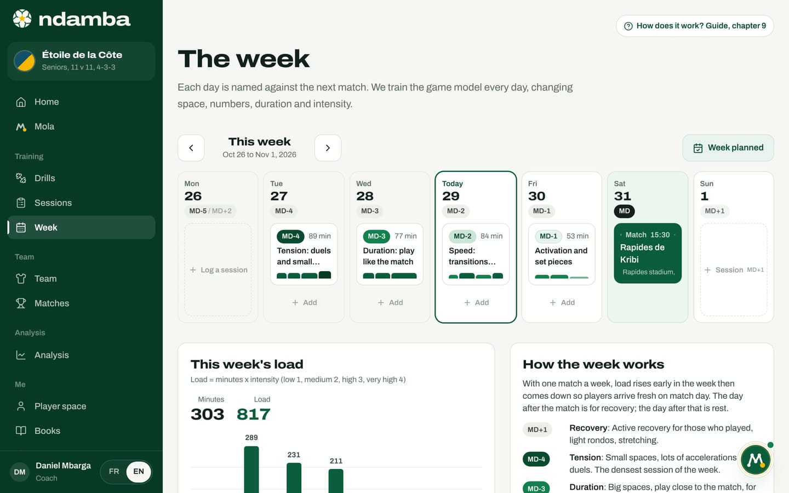

The Njangi philosophy
The method explained for someone who has never coached: possession with purpose, the image of the njangi, the seven words of the game, the Njangi Index with its exact formula and reading bands, and the MD calendar of the week.
10 min read
Ndamba is not a neutral toolbox. Every screen serves a single idea of football, the Njangi method, summed up in three words: possession with purpose. Before learning the buttons, it pays to understand that idea. This chapter explains it without jargon, for a parent, a club director or an investor who has never coached a team. It covers the image that gives the method its name, the seven words the app uses everywhere, the measurement that checks the idea match after match, and the calendar that organises the week.
The njangi: a pot that goes round
In Cameroon, a njangi (also called a tontine) brings neighbours, colleagues or friends together. Each month, everyone puts their share into the same pot, and the whole pot goes to one member, in turn. Nobody keeps the money for themselves. The following month, the person who received pays in like everyone else, and the pot goes to someone new. The Njangi Code points out that the same wisdom exists all over Africa under other names: the susu in Ghana, the esusu in Nigeria, the stokvel in South Africa, the chama in Kenya.
A njangi holds together because everyone pays in, because the pot keeps moving, because everyone knows their turn will come, and because the pot serves a project: school fees, a small business, a roof. Nobody passes the money round just to watch it change hands.
On the pitch, the translation is almost word for word:
| In the njangi | On the pitch |
|---|---|
| The pot | The ball |
| The contribution | The pass, the run, the effort off the ball |
| Receiving the pot | Scoring, or creating a real chance |
| Everyone’s turn | Every player takes part in the circulation |
| The project the pot serves | The intention behind every pass |
| The rules of the njangi | The game model, protected by the technical staff |
The novel tells children how this was discovered. In chapter 2 of book 1, Le njangi de Mami, BriBri and Kaydoudou spend the holidays in Bafoussam with their grandmother, Mami Nyanga, who runs the women’s njangi of her neighbourhood. They watch each woman drop her share into a pot painted green, then Mami hand the whole pot to a single person. BriBri makes the link: the njangi is like the ball, everyone pays in with a pass. The scene becomes Ball Lesson no. 2, which young players find in the app.
The method book adds a point coaches often forget: the contribution is not only the pass. The winger who stays wide to stretch a defender, without touching the ball for five minutes, pays in. The striker who runs in behind to drag a centre back away, and receives nothing, pays in. A njangi team learns to see these invisible contributions and to applaud them.
Possession with purpose
There is a way to misread this image: believing that moving the ball around is enough. Then you see teams passing between defenders, from one side to the other, in front of an opponent that never moves. The possession figure looks flattering and the match goes nowhere. A njangi where the money circulates without ever serving anything ends up dying; so does possession without purpose. Hence the motto: "The ball must travel. But it must know where it is going."
The method therefore changes the question you ask a player. Not "did you keep the ball?" but "What is your pass preparing?" A backward pass can be excellent if it draws the opponent in or lets the team breathe; the very same pass is poor if it prepares nothing.
The seven words of the game
To answer "what is your pass preparing?", the method offers seven words. The first five are the intentions of possession, what the team wants to do when it has the ball. The last two are reflexes without the ball, what it does the instant it loses or wins it back. The app files all seven under the name intentions: you will see them on every drill sheet, every session and every report. The English app uses the names below; the French names in brackets are the ones in the book.
| Word | What it means | What you see on the pitch |
|---|---|---|
| Build out (Sortir) | Build from the back by drawing pressure to free a player | The keeper and defenders invite the press, then find the free player |
| Progress (Progresser) | Break the opponent’s lines | A pass or a carry that gets past a line of defenders |
| Pin (Fixer) | Draw and pin opponents to create an advantage elsewhere | One player draws two opponents, then gives to the teammate he has freed |
| Finish (Finir) | Get into the finishing zone and shoot well | Entries into the box and shots taken in good conditions |
| Breathe (Respirer) | Keep the ball to reorganise and recover | Calm circulation to rest, manage a score or the heat |
| Win it back (Reprendre) | Five seconds of counter-press after losing the ball | The whole team presses the ball where it has just lost it |
| Look forward (Regarder devant) | After winning the ball, look forward first | The player who wins it looks for the forward pass before anything else |

For children, seven words are still too many. The novel gives them five simpler images, the five pieces of the Njangi, one for each country the brothers live in: the heart (playing together, in Cameroon), the reason (every pass has a purpose, in the United States), the eyes (look before you receive, in France), the map (be in the right place, in Catalonia) and the breath (keep the ball even when it burns, in England). Drill sheets also list their Pieces of the Njangi. Around the age of 15, the five pieces blend into the seven words the adults use.
Measuring it: the Njangi Index
An idea you cannot measure stays a slogan. Possession percentage is not enough: it tells you how long the team held the pot, not what it did with it. The Njangi Index (in French, Indice Njangi, the name used in the book) answers a different question: out of 100, did the team keep the ball with purpose?
It is built from fourteen codes, the buttons of the tagging pad. During the match, the analyst (or the coach, if there is no analyst) taps one button per action. The buttons are arranged in groups: Possession (completed pass, lost pass, progressive pass or carry, line broken), Danger (final third entry, box entry, shot, shot on target, goal), Fixation (a dribble that pins two opponents, a switch of play) and Transitions (loss, ball won back within five seconds, other regain). A last group, Opponent, records the other side’s shots and goals.

From these codes, the Index adds up five sub-indices, each scored out of 20 points. Each one answers a question.
- Progression: are we moving forward? It counts progressive passes and lines broken, relative to passes attempted.
- Penetration: are we getting where goals are scored? It counts entries into the final third and into the box (a box entry counts double), relative to the number of possessions.
- Fixation: do we draw the opponent in to free a teammate? It counts actions that pin two opponents and switches of play, relative to possessions.
- Regain: do we win the ball back straight after losing it? It counts balls won back within five seconds, relative to all losses.
- Control: do we keep the ball without giving away dangerous losses? It measures the share of our possession actions that keep the ball.
Every sub-index follows the same logic. You compute a simple ratio, compare it with a reference value, and a team that reaches the reference scores 20 points. Half the reference gives 10 points. Above the reference the score stays at 20: this cap stops a team from buying the whole Index with a single quality. For Control, a team that keeps the ball on 55% of its actions scores 0, at 70% it scores 10, and at 85% or more it scores 20.
Here is the exact formula, the one in chapter 32 of The Njangi Code and in the app’s calculation file, line for line (PERTES is the French word for losses):
PASSES = PASS_OK + PASS_LOST
PERTES = PASS_LOST + LOSS
POSS = PASS_LOST + LOSS + SHOT
ACTIONS = PASS_OK + PASS_LOST + LOSS
Progression = min(20, 20 * (PROG + LINE) / (0.35 * PASSES))
Penetration = min(20, 20 * (FINAL3 + 2 * BOX) / (1.00 * POSS))
Fixation = min(20, 20 * (FIX2 + SWITCH) / (0.25 * POSS))
Reprise = min(20, 20 * REGAIN5 / (0.40 * PERTES))
Controle = max(0, min(20, 20 * (PASS_OK / ACTIONS - 0.55) / 0.30))
Indice = sum of the five, each rounded to 0.1
Four rules complete the formula. If a denominator is zero (no passes, no losses), the sub-index is 0. A match, or a whole season, is computed by adding up the codes and then applying the formula, never by averaging halves or matches. The reference values (0.35, 1, 0.25, 0.40, and 55% to 85%) are internal benchmarks of the method, not averages from world football: you calibrate them on your own matches and never change them mid-season. Finally, with young players, the Index measures the team, never a child.
The book gives a full example. Over one match, a senior team recorded 300 completed passes, 80 lost passes, 50 progressive actions, 30 lines broken, 42 final third entries, 15 box entries, 12 fixation actions, 9 switches, 30 losses in duels or carries, 33 balls won back within five seconds and 10 shots. That gives 12.0 for Progression, 12.0 for Penetration, 14.0 for Fixation, 15.0 for Regain and 12.1 for Control: an Index of 65.1.
Reading the Index: the bands
The app turns every Index into a phrase, using five bands:
| Index | Reading shown |
|---|---|
| Under 35 | Possession without purpose |
| 35 to under 50 | Fragile purpose |
| 50 to under 65 | Njangi in progress |
| 65 to under 80 | Solid Njangi |
| 80 and above | Championship Njangi |
Each sub-index also gets a label: To build under 8 points, Improving from 8 to 13, Solid from 13 up. The weakest sub-index points to the intention to train the following week: Progression leads to Progress, Penetration to Finish, Fixation to Pin, Regain to Win it back and Control to Breathe. For each sub-index the book names four reference drills; the match report suggests two for each of the two weakest sub-indices.
In the pro club demo, Étoile de la Côte scores 67.9 against Météore de Bafoussam: 13.4 for Progression, 14.3 for Penetration, 8.3 for Fixation, 14.1 for Regain and 17.8 for Control. That is a "Solid Njangi", with Fixation Improving: next week will work on the intention Pin.

The MD calendar
The last piece of the philosophy organises time. MD stands for match day. MD-4 is the fourth day before the match, MD+1 the day after. The code lets everyone talk about the same week, whether the match is on a Saturday, a Sunday or a Wednesday.
The principle is to train the game model every day, changing the space, the number of players, the duration and the intensity according to how far away the match is. There is no "fitness day" and "tactics day": every session is both.
| Day | Name in the app | What you do |
|---|---|---|
| MD+1 | Recovery | Active recovery for those who played, a rondo for everyone |
| MD+2 | Rest | A day off |
| MD-4 | Tension | Small spaces and lots of duels: the most intense day of the week |
| MD-3 | Duration | Big spaces and long playing time, like the match |
| MD-2 | Speed | Speed, transitions and finishing, in short bursts |
| MD-1 | Activation | Light activation and set pieces, to keep the legs fresh |
| MD | Match | Warm-up, then the match |
With young players the app also uses the label Youth: they learn by playing, with lots of touches, small games and fun. The Week page shows these codes on every day and computes the load, that is the minutes multiplied by the intensity of each drill (low 1, medium 2, high 3, very high 4).

